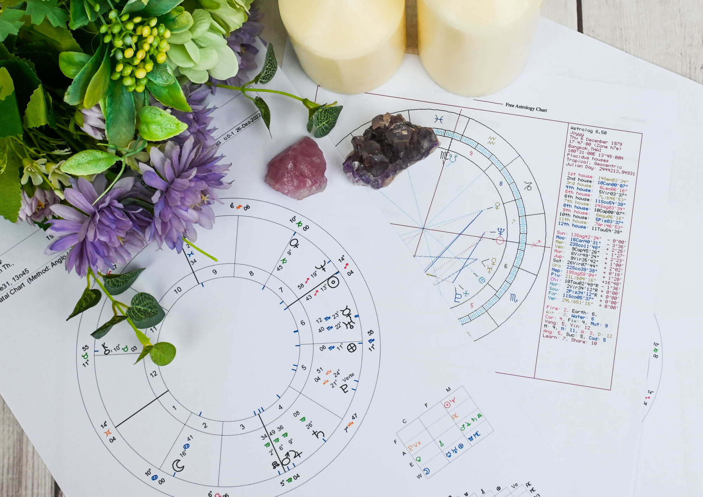
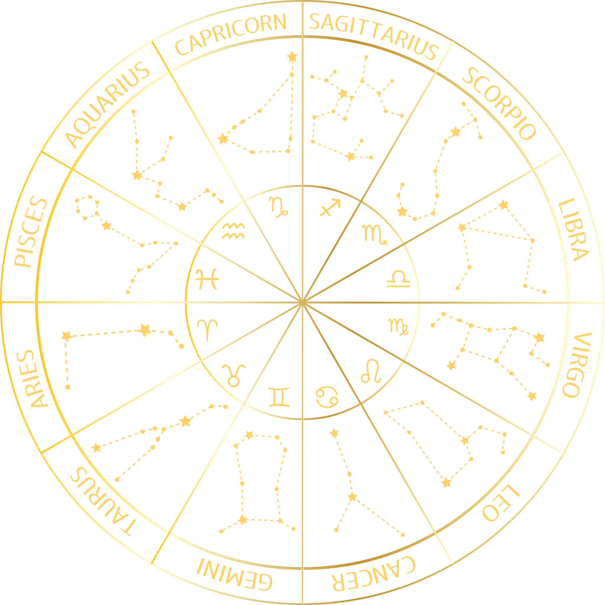
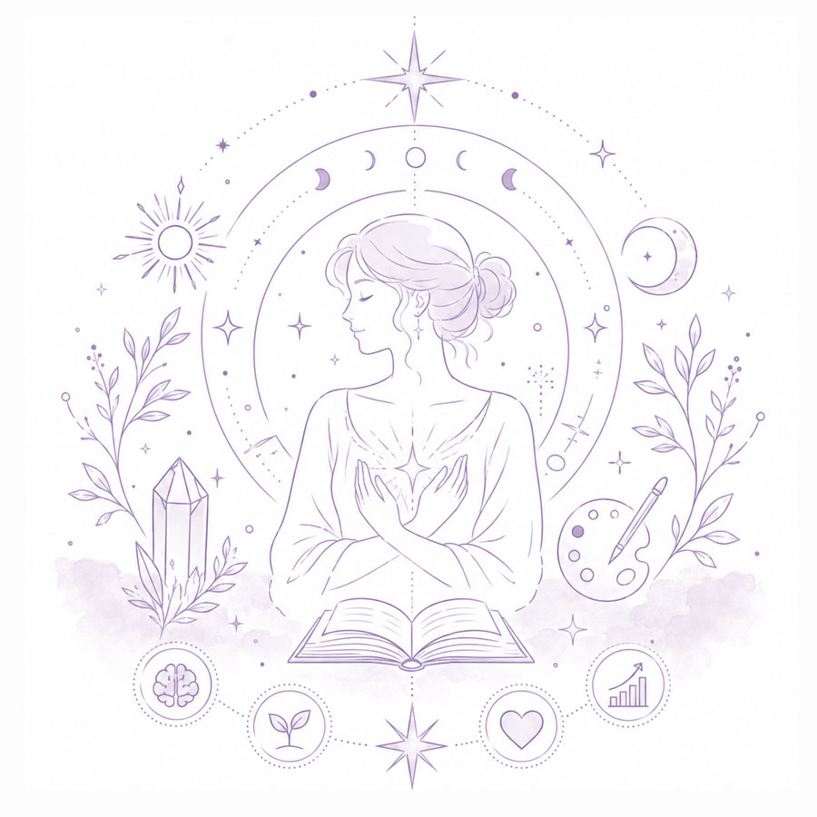
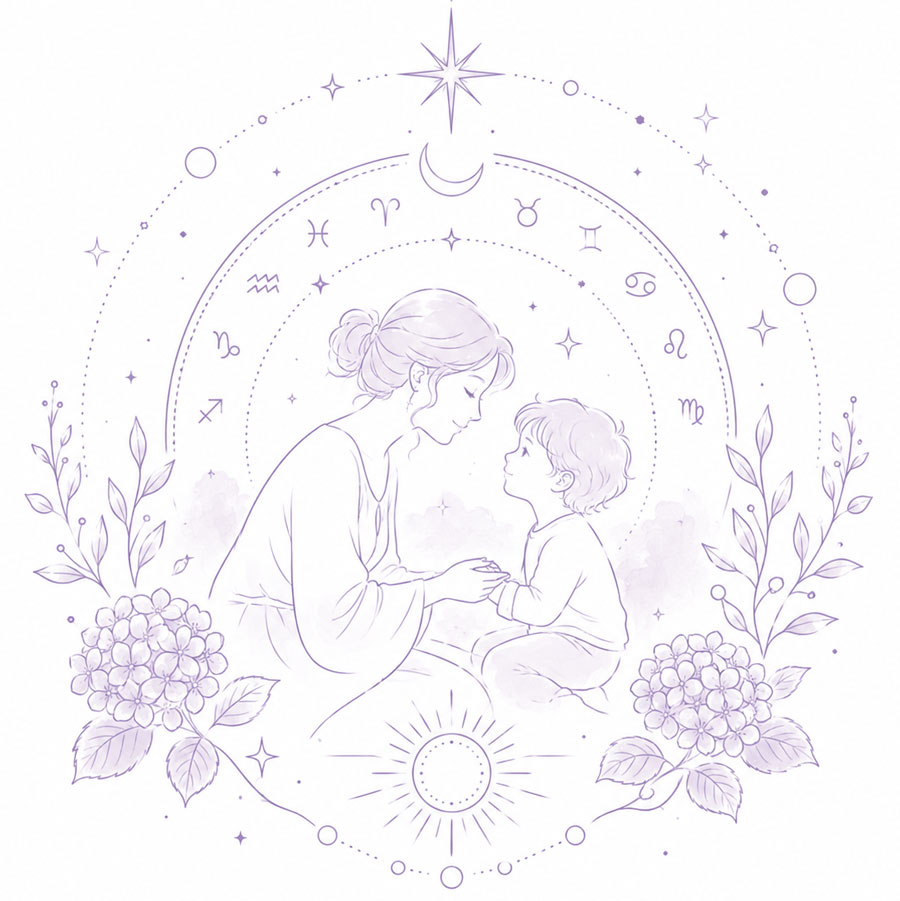
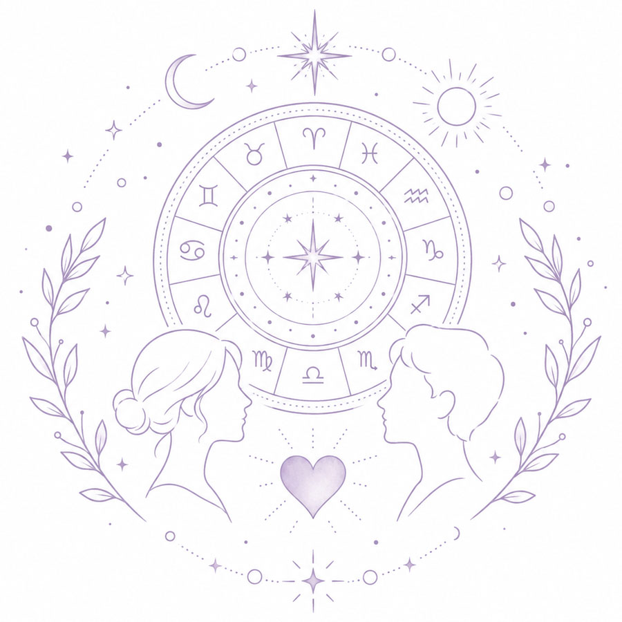
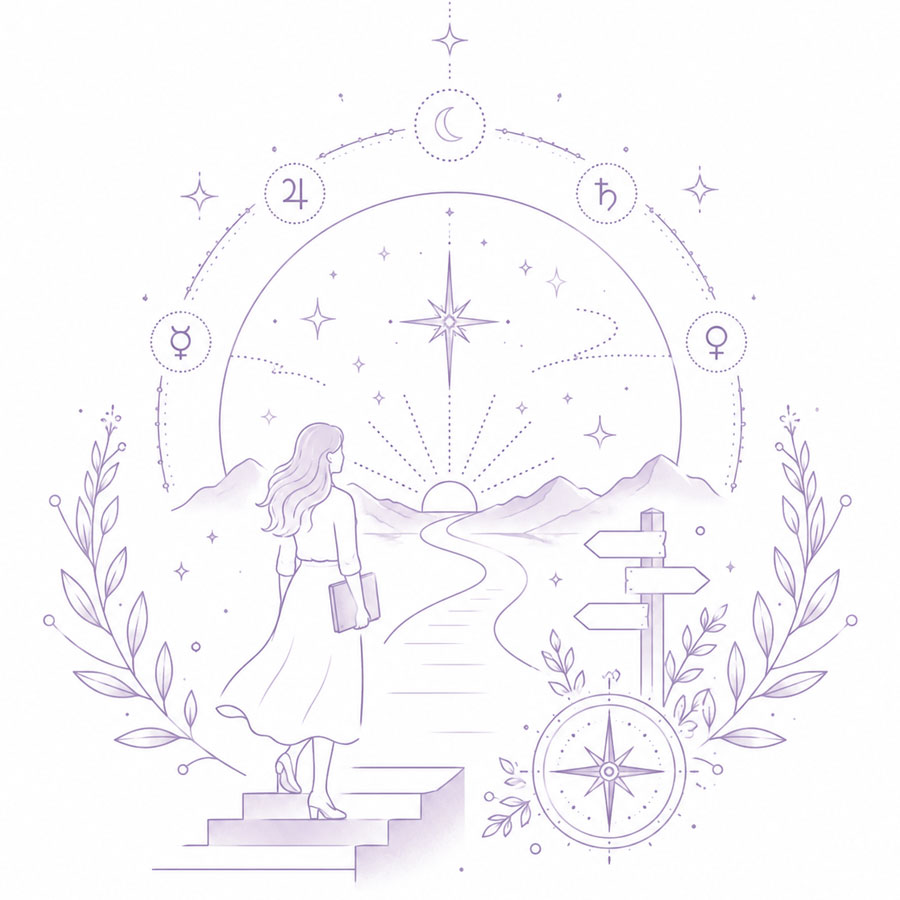
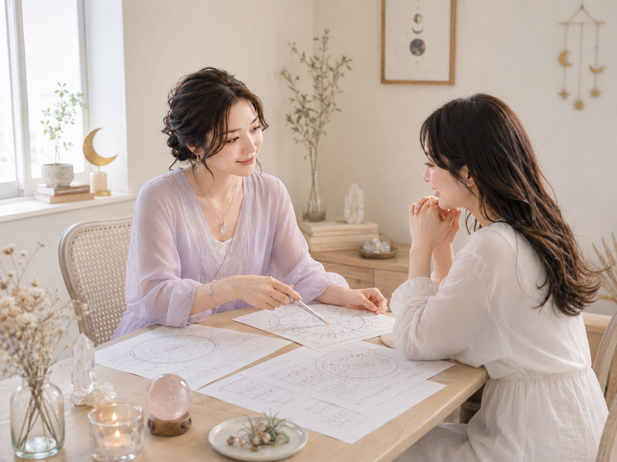
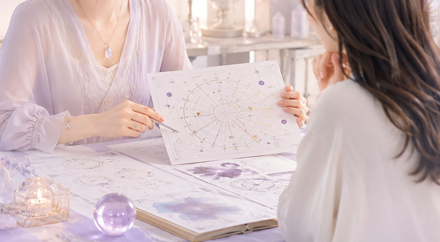

星を知れば、
自分がもっとわかる
ホロスコープから、あなたらしさや才能、
これからの一歩を読み解きます。



Worries
こんなお悩みありませんかひとりで抱え込んで
いませんか？
- このまま頑張り続けていいのか
分からない - 一生懸命なのに、なぜか思うように
いかない - 自分の才能や本当の強みを知りたい
- 恋愛や人間関係で同じ悩みを
繰り返している - 子どもの個性や才能、接し方に
悩んでいる - 仕事や転職、これからの生き方に
迷っている
本当の自分を知る時間
本当の自分を知る時間
ホロスコープは、生まれた瞬間の星の配置を読み解き、その人が持つ個性や才能、考え方の傾向などを知るためのものです。
自分では短所だと思っていた部分も、見方を変えれば大切な個性や才能かもしれません。
鑑定では「○○座だから」と一つの星座だけで判断するのではなく、さまざまな星の配置を丁寧に読み解きます。
自分自身はもちろん、お子さまやパートナーとの違いを知ることで、
これまでとは少し違った視点から人生や人間関係を見つめられるようお手伝いします。

Horoscope
生まれた瞬間の星から、自分を知る
ホロスコープとは、生まれた日時や場所をもとに、その瞬間の星の配置を表したものです。
そこから、生まれ持った個性や才能、考え方の傾向、人との関わり方などを読み解き、自分自身や大切な人をより深く理解するためのヒントとして活用します。

自分自身・才能
生まれ持った個性、得意なこと、苦手なことなどを読み解きます。「自分らしさが分からない」「もっと自分の強みを活かしたい」という方に、これからの生き方を考えるヒントをお伝えします。

子育て・親子関係
お子さまが生まれ持つ個性や才能を読み解き、その子らしさを尊重した関わり方や声かけを一緒に考えます。「どうして分かり合えないの？」と感じていた親子の違いを知るきっかけにも。

恋愛・夫婦・人間関係
恋愛、夫婦、家族、職場など、人との関係に悩んでいる方へ。自分と相手、それぞれの性質や価値観を読み解きながら、関係性を見つめ直すヒントを探します。

仕事・これからの人生
転職、働き方、今後の方向性など、「このままでいいのかな」と迷っている方へ。生まれ持った資質を確認しながら、自分らしく進むための次の一歩を一緒に考えます。
Features
4つの特徴
「当てる」だけで終わらない
星読み
運勢や結果を伝えて終わるのではなく、「では、これから何ができるのか」まで一緒に考えます。
ホロスコープを、未来を決めつけるものではなく、自分らしく生きるためのヒントとしてお伝えします。

一人ひとりを丁寧に読み解く
「○○座だからこんな人」と簡単に決めつけるのではなく、生まれた瞬間のさまざまな星の配置を細やかに読み解きます。
才能や性格だけでなく、恋愛・夫婦関係・仕事・人間関係など、さまざまなお悩みをご相談いただけます。
親子それぞれの個性を
知る鑑定
お子さまにも、その子だけの個性や価値観があります。
ホロスコープから親子それぞれの違いを知ることで、「なぜこうなるの？」という戸惑いを、理解するための新しい視点へとつなげます。ブログでも、子どもには「その子だけの星」があり、親の価値観だけで決めつけないことを大切にされています。
実体験があるからこその
寄り添い
障害児育児、きょうだい児育児、県外でのワンオペ育児など、自身もさまざまな悩みや葛藤を経験してきました。
ただ「大丈夫」と励ますだけではなく、その気持ちに寄り添いながら、「これからどうするか」を一緒に見つけていくことを大切にしています。
Contact & Access
ご予約・店舗情報鑑定のご予約・お問い合わせは、
公式LINEまたはお電話にて承ります。